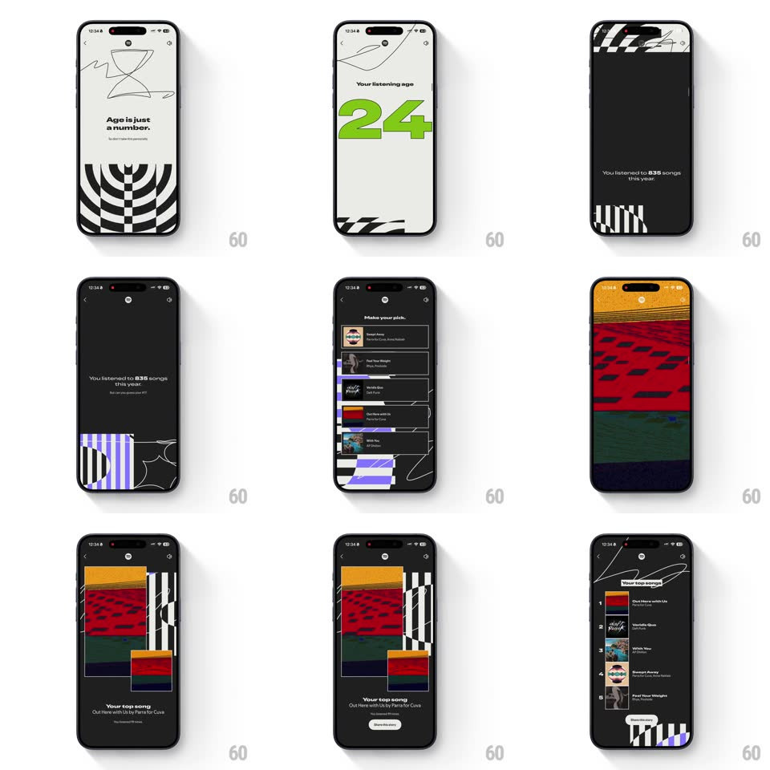

Media
Frame-by-frame

Rebuild this animation 1:1: Spotify Wrapped's top-songs sequence - genre lists, the listening-age reveal, and the top-song cards, each scene hitting with rhythmic staggered reveals and hard-cut transitions.

Rebuild this animation 1:1: Spotify Wrapped's top-songs sequence - genre lists, the listening-age reveal, and the top-song cards, each scene hitting with rhythmic staggered reveals and hard-cut transitions. ## Integration Integration: stack-agnostic spec - springs given as stiffness/damping, timed motions as duration + curve; map every value to your framework and animation library of choice. ## Scene A Wrapped story run of cream and black scenes: "Your top genres" (Electronica, Desi, Lo-Fi, Lounge, Pop over a black-dot field); "Age is just a number." with a sketched hourglass over a warped checkerboard; "Your listening age 24" in huge green; "You listened to 835 songs this year." on black with white bars; "Make your pick." with guessable song rows; a woven multicolor art card; "Your top song - Out there with us by Parra for Cuva"; and "Your top songs" as a numbered list with album thumbs. ## Motion spec Pattern: rhythmic scene cuts with staggered list builds. - Scenes hard-cut on the beat (~2.5s per scene) - no crossfades between scenes; each new scene's content animates in from zero. - Lists build with a fast stagger: rows slide in from the bottom (24px, 220ms, ease-out) 60ms apart, numbered chips popping with each row. - The listening-age number lands big: "24" scales from 0.7 with a firm spring (~380/14), its green the only color on the cream field. - "Make your pick." rows slide in, then the wrong guesses dim (opacity 0.35, 250ms) while the right one holds - the quiz resolves visually before the reveal scene. - The top-song card builds in layers: art card scales in (spring ~340/16), then title, then artist, then the minutes line (each 100ms apart), with a Share pill rising last. - Decorative systems (dot fields, checkerboards, sketch lines) drift slowly within their scenes (10-15s loops) so stills never sit dead. ## Calibration - The rhythm is the brand: staggers are tight (60ms) and springs are firm - nothing eases lazily. - Type is oversized and cropped-agnostic - headlines may touch the edges; that's the look. ## Reduced motion Each scene fades in whole (300ms); lists appear complete. ## Don't miss - "Make your pick." is interactive - the story waits for a guess before resolving. - The numbered top-songs list is the shareable artifact - it gets the cleanest layout of the run.